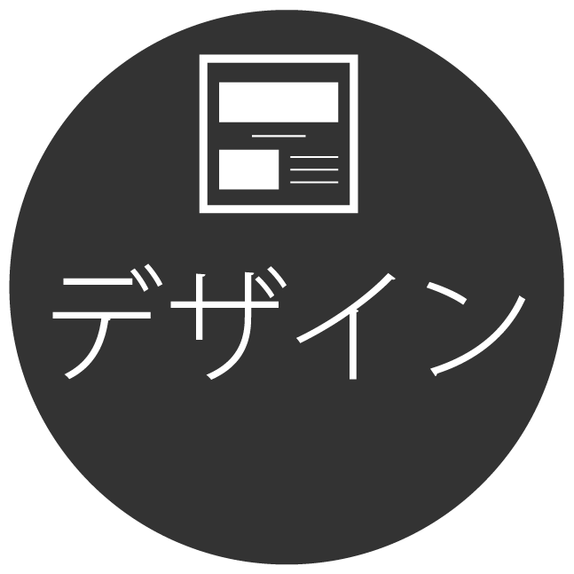

架空ポスター
「南岡市花火大会」デザイン
画像クリックで拡大します。
Overview
架空の花火大会「南岡市花火大会」のポスターを作成。
- 作成物横長のポスターデザイン１枚
- 担当箇所デザイン作成
- 作成期間２日
- 使用ツール一眼レフカメラ・figma・Illustrator
Target
恋人や配偶者と花火大会を見に行く機会がある人物
ペルソナ設定
大学時代に知り合った男性と付き合っているが、男性は現在東京で働いている。
休日は買い物に出かけることが多い。服を買うことが好きで、各季節にあったテーマの服装を好んで着用する。服飾系の雑誌もよく購入する。
comcept
花火というイベントを通して南岡市の知名度上昇と来場者アップを見込めるポスターデザイン

Process
作成フロー
- 
地方でも人気のあるイベントの一つである花火大会のポスターを作成しました。
既存のポスターは【一番目立つ花火の写真】＋【次いで大きなタイトル】＋【詳細情報】という組み合わせでできているものが多数だったので、それに沿ったデザインを作りました。
今回の南岡市は
・商業施設は少なく普段は穏やかな市
・夏場は花火の他にキャンプや川遊びなどのレジャーで訪れる人が多い
・都内から一時間弱というアクセス
という設定のもとデザイン作成を進行しました。
生活定点を参考にすると、花火大会の来場層で一番多いのは２０代の女性だったので今回はペルソナ設定をその年齢層に設定しました。
(出典:https://seikatsusoken.jp/teiten/answer/278.html)
{kind=link}
花火大会のロゴは色を複数使ったり目立つ色を使用してしまうと花火の写真よりも目立ってしまう可能性があったので、文字サイズを大きくして目立たせるようにしました。
また、「火」の文字を花火の打ち上がる軌跡に見立ててその上に花火のロゴを作成して、花火大会らしさがより伝わるようにしています。
さらに花火の華やかさを文字からも表現できるように、軽くぼかした文字を重ねて光っているような表現をしました。
{kind=link}
キャッチコピーに使用した「今日はきっと、忘れられない日になる。」という文章には実際に花火を見た時の見た感動の表現と、今回のターゲットに想定している男女の組み合わせを想定し、関係性が変わる思い出の日になる、という二つの意味を込めて作成しました。
さらに、ターゲットに対して「忘れられないほどの花火とはどういうものか」という興味を掻き立てる意図も含めています。
文章が埋もれないためにも、四隅を線で囲み目立たせるようにしています。
上記のコピーを目立たせるためにも花火の写真にも並んで花火を見ている人が写っているものを採用しました。
{kind=link}
詳細情報には、最も重要である日付が一番目立つようフォントサイズを大きくし、パッと見た時でもいつ行われるかが簡単にわかるようにデザインしました。
次いで南岡市という場所を知らない人にも興味を持ってもらうためには市の場所を知ってもらう必要があると考えました。
そのために、「東京から約７０分」という文章を付け加えることで今までこの地の事を知らなかった人でも南岡が身近な場所に存在すると認識して興味を抱いてもらう意図を込めています。
打ち上げ場所へのアクセスや詳細地図などを掲載すると情報量が多くなってしまうと考えたので、詳細については検索すると出てくるという事を検索ボックスを模した文書を掲載して誘導するようにしています。
最後に一般のターゲットが必要な情報を考えた結果、主催や後援などの優先度は低くなりがちなので最も小さく掲載しています。
{kind=link}
フォントは花火のきらびやかな雰囲気を壊さないように明朝体を使用しました。
コピーには花火大会という日本の伝統文化の雰囲気を助長させるレトロなフォントを使用し、他の文章と差別化を図りました。